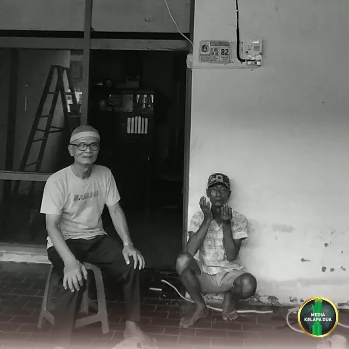
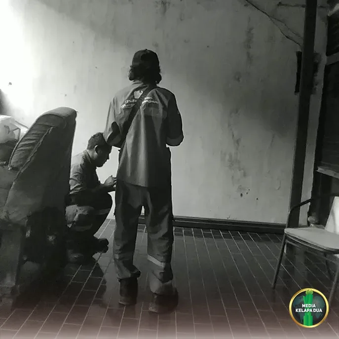
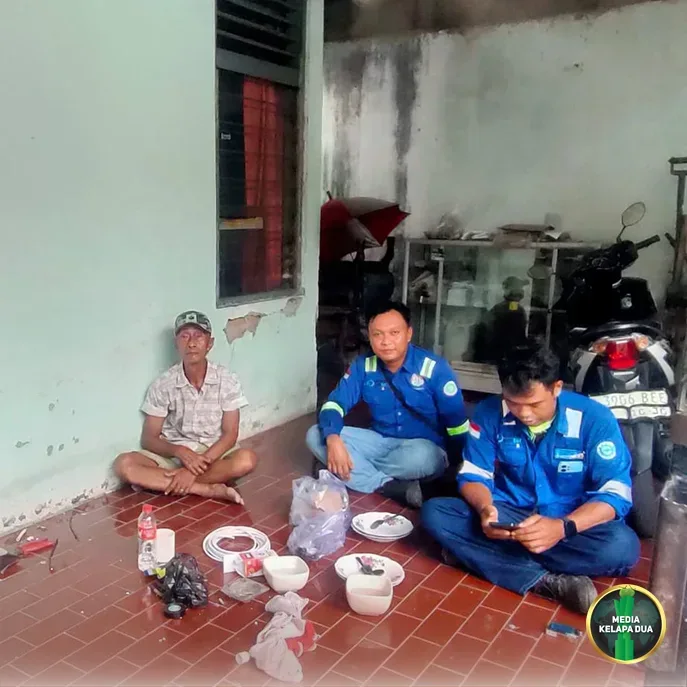
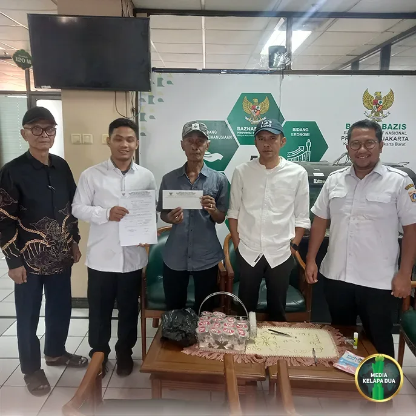

Berita Wilayah

PLN dan Baznas Bantu Warga Kembali Nikmati Penerangan Listrik
Tanggal, 12 November 2926
MediaKada | KWarga yang selama kurang lebih delapan tahun hidup tanpa aliran listrik kini kembali dapat menikmati penerangan di rumah mereka berkat sinergi antara Kelurahan Kelapa Dua, pengurus wilayah, PLN, dan Baznas. Bantuan ini menjadi wujud nyata kepedulian berbagai pihak dalam meningkatkan kesejahteraan masyarakat serta memastikan setiap keluarga memiliki akses terhadap kebutuhan dasar berupa listrik.
Kelurahan Kelapa Dua bersama pengurus wilayah terus berupaya memfasilitasi kebutuhan warga yang belum memiliki sambungan listrik. Melalui koordinasi dan kerja sama dengan berbagai pihak, harapan warga untuk mendapatkan akses listrik yang layak akhirnya dapat terwujud.
Pada 12 November 2026, PLN kembali melakukan pemasangan sambungan listrik bagi warga di RT 007/RW 08, Kelurahan Kelapa Dua, Kecamatan Kebon Jeruk, Jakarta Barat. Kegiatan ini merupakan bagian dari program bantuan penyambungan listrik yang menyasar masyarakat yang membutuhkan.



Melalui dukungan PLN dan Baznas, warga kini dapat merasakan manfaat penerangan listrik untuk menunjang aktivitas sehari-hari. Kehadiran aliran listrik diharapkan dapat meningkatkan kenyamanan keluarga, mendukung kegiatan belajar anak, serta mendorong produktivitas masyarakat.
Kasi Kesejahteraan Rakyat (Kesra) Kelurahan Kelapa Dua, Bangun Wiryawan, menyampaikan apresiasi atas perhatian dan bantuan yang diberikan oleh PLN dan Baznas. Menurutnya, program tersebut merupakan bentuk kepedulian nyata yang memberikan manfaat langsung bagi warga serta mendukung pemerataan akses energi listrik di lingkungan masyarakat.
Program ini menjadi bukti sinergi yang baik antara pemerintah, pengurus wilayah, PLN, dan Baznas dalam membantu masyarakat yang membutuhkan. Dengan adanya pemasangan sambungan listrik tersebut, diharapkan semakin banyak warga dapat menikmati fasilitas dasar yang aman dan nyaman, sehingga kualitas hidup masyarakat dapat terus meningkat.